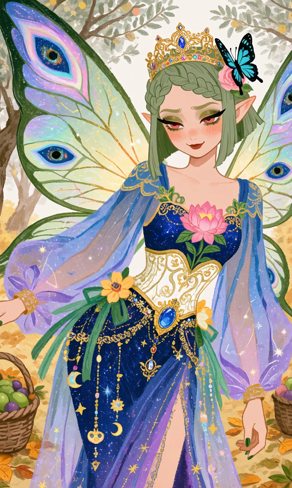
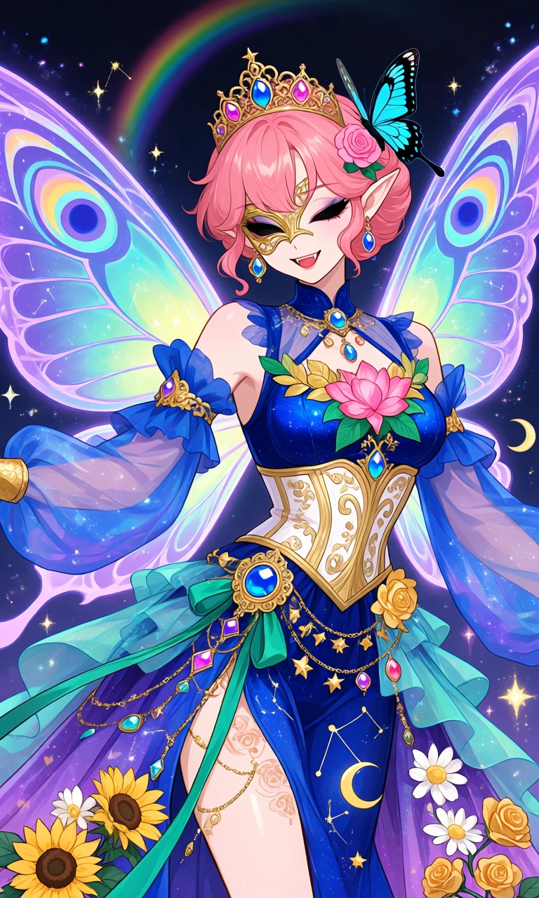

The Constellation Garden

Outfit Prompt
The outfit blends royal fairy queen, celestial sorceress, and elegant warrior aesthetics. It features a form-fitting yet flowing silhouette with a strong emphasis on movement, luminosity, and nature-magic motifs. The color palette is dominated by deep royal blues, vibrant purples, iridescent teals, golds, and accents of pink, green, and sunny yellow. Everything is adorned with glowing magical effects, sparkles, and cosmic elements (stars, constellations, crescent moons).
An ornate golden tiara with intricate filigree, embedded with colorful gemstones (blue, pink, purple). A large, realistic butterfly (blue, teal, and black wings) is in her hair decorated with a pink rose. A delicate golden mask/eyepiece covers part of her right eye, giving a mysterious, regal look.
Large, translucent butterfly/peacock wings in shimmering shades of purple, blue, and teal with prominent "eye" patterns. They glow with rainbow and cosmic light, suggesting magical flight capability.
A deep blue, low-cut bodice with a starry night-sky texture. It has gold filigree trim and leaf/flower embellishments (notably a large pink lotus-like flower with green leaves on the chest). A structured white-and-gold corset with elaborate golden scrollwork, worn over the blue bodice. It cinches the waist dramatically and features a large central blue gem in a golden setting at the front. Voluminous, sheer blue-to-purple gradient sleeves that are loose and flowing, with gold cuffs. They trail long ribbons and fabric that swirl around her. Exposed shoulders with additional blue fabric accents and arm bands.
A multi-layered skirt in deep blue and purple with a high side slit. Decorated with gold constellations, stars, and chain details. Adorned with real-looking sunflowers, white daisies, and golden roses along the hem and ribbons. Sheer teal and purple fabric panels flow outward like sashes or wings.
A wide golden belt with a massive central blue gem, green ribbons, and dangling chains with more gems and star motifs.
Multiple colorful gemstone earrings, necklaces, and a small golden crescent moon floating near her left side.
The skirt parts to reveal part of her thigh with subtle rose tattoos or patterns and more golden chains.
The entire outfit is surrounded by floating sparkles, light particles, rainbow halos, and glowing energy, emphasizing its magical nature.
Outfit Examples



